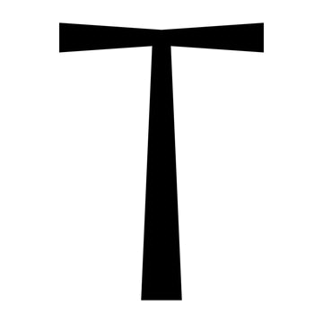
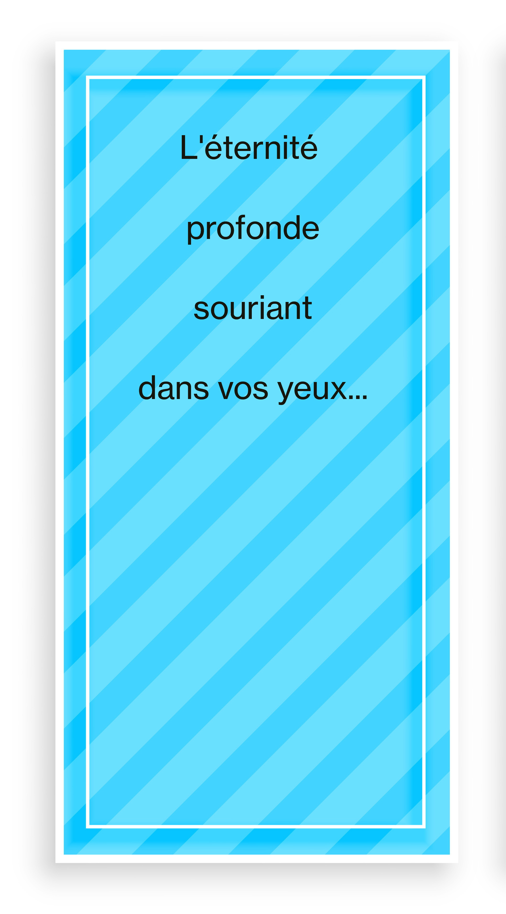
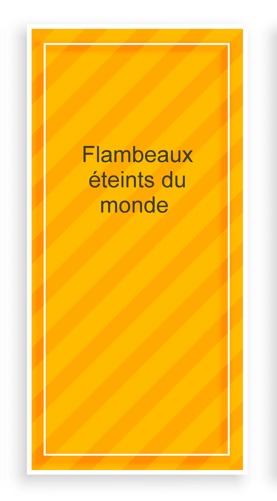
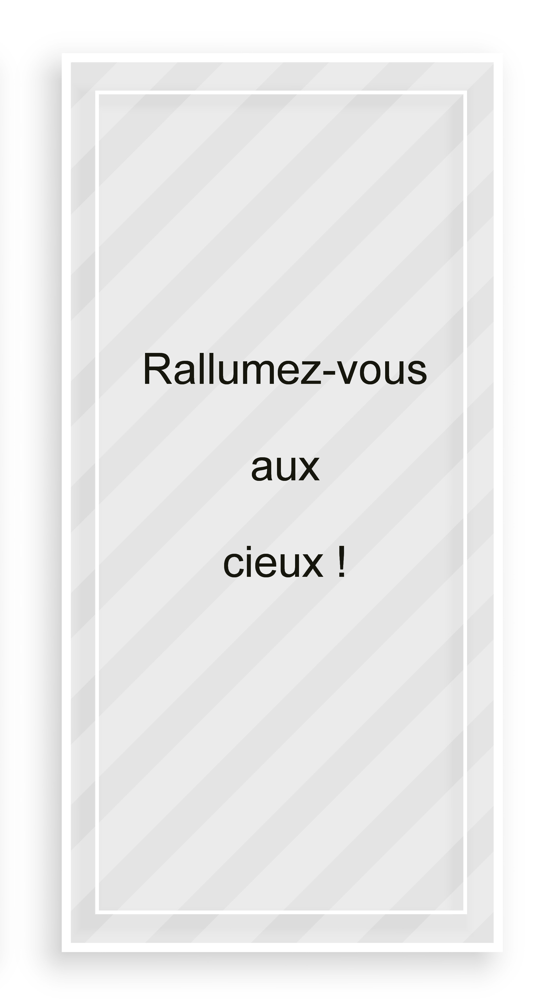

VICTIMES
du
BATACLAN
Stéphane
Albertini
39 ans
Jean-Jacques
Amiot
68 ans
Guillaume
Barreau-Decherf
43 ans
Maxime
Bouffard
26 ans
Nick
Alexander
36 ans
Thomas
Ayad
32 ans
Emmanuel
Bonnet
47 ans
Quentin
Boulenger
29 ans
Élodie
Breuil
23 ans
Claire
Camax
28 ans
Baptiste
Chevreau
28 ans
Nicolas
Classeau
28 ans
Precilia
Correia
35 ans
Elsa
Delplace
35 ans
Alban
Denuit
32 ans
Aurélie
de Perreti
33 ans
Vincent
Detoc
38 ans
Elif
Dogan
26 ans
Fabrice
Dubois
46 ans
Romain
Dunet
28 ans
Thomas
Duperron
30 ans
Mathias
Dymarski
22 ans
Germain
Ferey
36 ans
Suzon
Garrigues
21 ans
Grégory
Fosse
28 ans
Christophe
Foultier
39 ans
Matthieu
Giroud
39 ans
Cédric
Gomet
30 ans
Julien
Galisson
32 ans
Nohemi
Gonzales
23 ans
Stéphane
Grégoire
46 ans
J.Alberto
Gonzales Garrido
29 ans
Pierre-Yves
Guyomard
43 ans
Anne
Guyomard
29 ans
Mayeul
Gaubert
30 ans
Olivier
Hauducœur
44 ans
Frédéric
Henninot
45 ans
Pierre-Antoine
Henry
36 ans
Mathieu
Hoche
37 ans
Pierre
Innocenti
40 ans
Nathalie
Jardin
31 ans
Marion
Jouanneau
24 ans
Milko
Jozic
47 ans
Jean-Jacques
Kircheim
44 ans
Nathalie
Lauraine
39 ans
Marie
Lausch
23 ans
Renaud
Le Guen
29 ans
Gilles
Leclerc
32 ans
Christophe
Lellouche
33 ans
Cécile
Martin
33 ans
Antoine
Mary
34 ans
Cédric
Mauduit
41 ans
Fanny
Minot
29 ans
Isabelle
Merlin
44 ans
Yannick
Minvielle
39 ans
Cécile
Misse
32 ans
Marie
Mosser
24 ans
Quentin
Mourier
29 ans
Christophe
Mutez
40 ans
Hélène
Muyal-Leiris
35 ans
Romain
Naufle
30 ans
Bertrand
Navarret
37 ans
Christopher
Neuet-Shalter
39 ans
Lola
Ouzounian
17 ans
David
Perchirin
45 ans
Franck
Pitiot
33 ans
Caroline
Prenat
24 ans
François-Xavier
Prévost
29 ans
Armelle
Pumir Anticevic
46 ans
Richard
Rammant
53 ans
Valentin
Ribet
26 ans
Estelle
Rouat
25 ans
Thibault
Rousse Lacordaire
36 ans
Raphaël
Ruiz
37 ans
Madeleine
Sadin
30 ans
Lola
Salines
28 ans
Patricia
San Martin
61 ans
Hugo
Sarrade
23 ans
Djalal Eddin
Sebaa
30 ans
Maud
Serrault
37 ans
Sven
Silva Perugini
29 ans
Valeria
Solesin
28 ans
Fabien
Stech
51 ans
Éric
Thomé
39 ans
Olivier
Vernadal
44 ans
Claire
Tapprest
23 ans
Ariane
Theiller
24 ans
Matthieu
de Rorthais
32 ans
Luis Felipe
Zschoche Valle
35 ans
Galerie d'images



